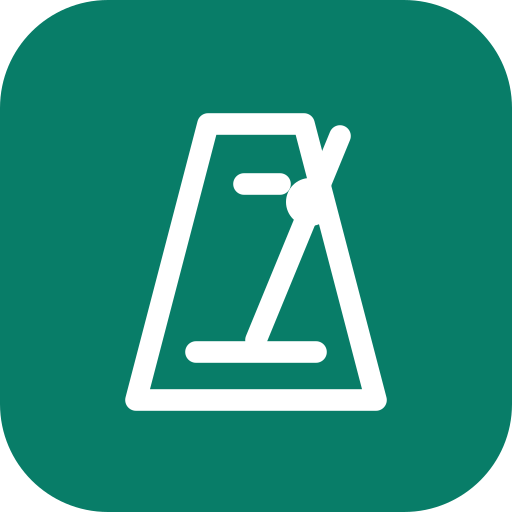

Metronom
Tempoyu ayarla, kendi ritmini kur ve kaydet.
- 30–300 BPM
- Ölçüler ve vurgular
- Kayıtlı ritimler
Akort aleti
Mikrofonla enstrümanını saniyeler içinde akort et.
- Kromatik
- Gitar
- Ukulele

LmXMetroTempo için metronom, ses için akort aleti. İkisi de ücretsiz, tarayıcında açılır.
Tempoyu ayarla, kendi ritmini kur ve kaydet.
Mikrofonla enstrümanını saniyeler içinde akort et.